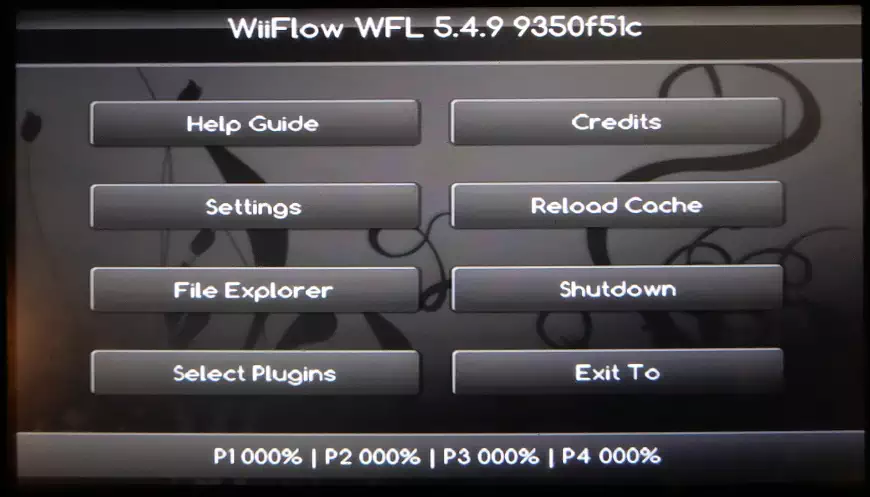

Updated Orchid Theme for WiiFlow Lite (and Wii U Icons)
WiiFlow is an app that displays Wii and GameCube games in a pretty coverflow view. The app used to have a wide variety of themes to customize its appearance to your liking; but as WiiFlow gained new features that required new UI elements, the themes were not updated.
I put in a little bit of work to update the Orchid theme to support the latest version of WiiFlow. It's still very incomplete; most of the settings menu will not display correctly, but the main menu and frequently used settings are functional. I also changed the "USB" icon to a "Wii" icon. I hope you enjoy using it. The Orchid theme was created by Benjay, Jiiwah, and Roku93 on GBATemp. Refer to the WiiFlow Wiki for instructions on how to install themes.
I also have an Orchid themed Wii U Menu shortcut to WiiFlow. It requires a forwarder channel installed on the vWii to work.
Download and Instructions for Haxchi (Outdated CFW)
I also have images for a shortcut to Wiiflow on the Wii U menu.
On a Haxchi Wii U: install HBL2HBC and WiiU2HBC. You can replace WiiU2HBC's icon with my custom WiiFlow icons after installing. I recommend using Wii U Title Boot Editor. If Wii U Title Boot Editor does not work for you, use the files in the folder "tga-files" and transfer them to the shortcut's meta folder via ftp (be careful when doing this! View the Wii U's tga files to make sure you have the correct title).